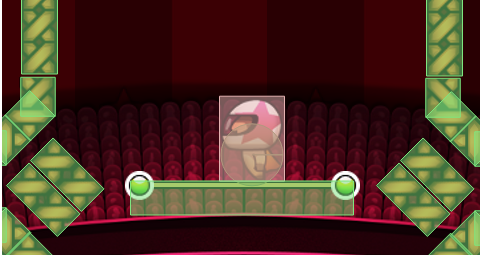

Thiago Figueredo Cardoso, Thiago de Barros Lacerda
... one code per platform/device
Expensive
Hard to mantain
... same code for all platforms/devices
Needs a framework
Not every aspect of the code can be easily adapted
We need to split platform-dependent from platform-independent code and rewrite only the former
Sprite.prototype.update = function (delta) {
// update position, animation, ...
};
Sprite.prototype.draw = function (context) {
< // draw on the screen
};
function mainLoop () {
for (var i in sprites) {
sprites[i].update();
sprites[i].draw();
}
}
Sprite's update deals with UI (platform-dependent) and behavior (platform-independent)
RectSprite.prototype.update = function (delta) {
this.x += this.velocity * delta;
};
RectSprite.prototype.draw = function (context) {
context.fillStyle = "black";
context.fillRect(this.x, this.y, this.width, this.height);
};
Velocity (pixel/sec):
var rect = new RectSprite();
rect.velocity = config.velocity / UI.SCALE;
RectSprite.prototype.update = function (delta) {
this.x += (this.velocity / UI.SCALE) * delta;
};
It wasn't modeled for multiple platforms
class Sprite : public QGraphicsObject
{
Q_OBJECT
...
};
Elements are implemented as objects of the graphic system
Behavior and UI mixed
void GameWorld::step(qreal dt)
{
...
const QPointF &ds = dt * sprite->velocity() * worldScaleFactor;
...
}
Multiple resolutions handled with scales in the physics
No Qt, no C++, no reuse :(
On top on the Sparta engine
New elements
Bug fixes
Implementation of classes/functionalities of the Qt framework in C#:
No testing framework
Step-by-step debugging in many cases
Oh, please, let's start from scratch!
Three layer architecture, separation of concerns
Platform deals with platform-dependent issues (UI, audio and filesystem)
Tests uses the Core directly
Core deals with the behavior of the elements and game logic (score, world)
Physics deals with collisions and its resolution
Elements are bodies, interactions are collisions
Elements are entities that have a group of bodies
Interactions are input events and collisions between entities
Elements are sprites that display an entity
No interactions, only forwarding of events (the UI doesn't alter the game)
Rewrite only the Platform layer
Thiago Figueredo Cardoso, Thiago de Barros Lacerda